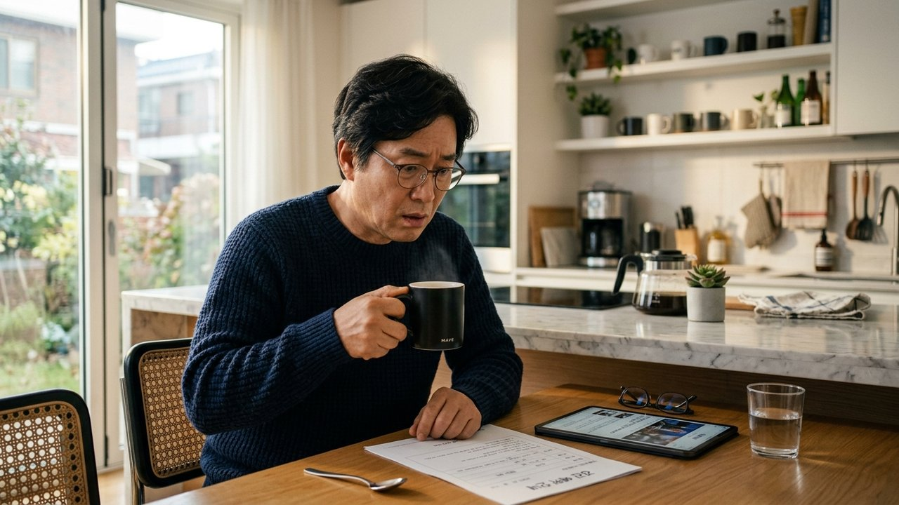
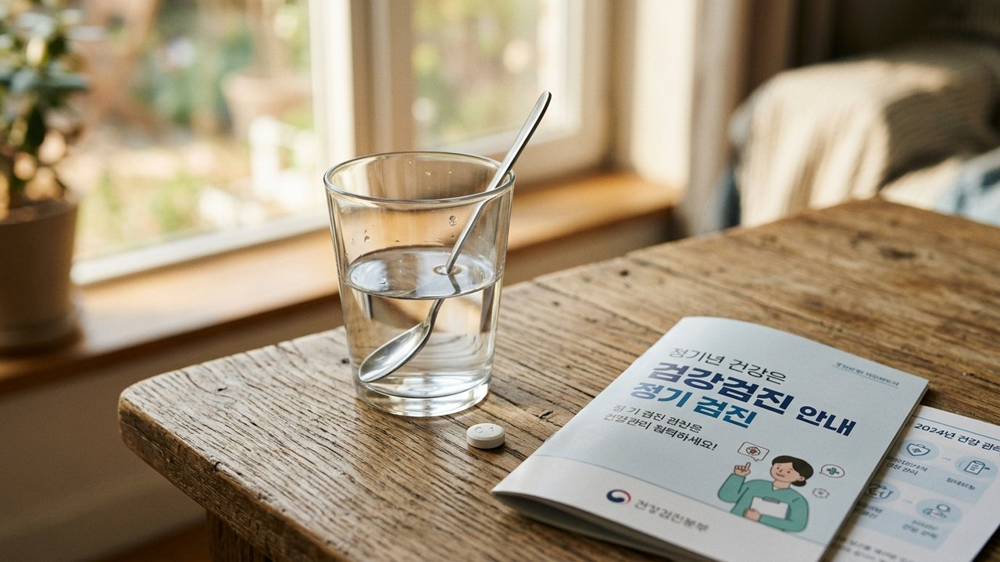
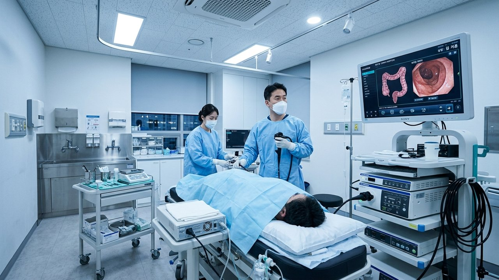
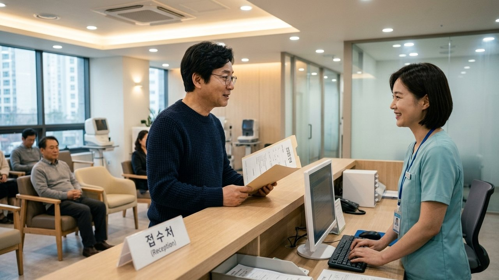
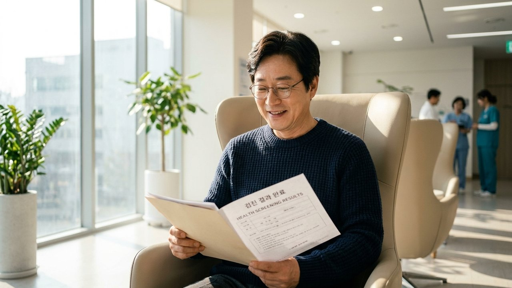

"검진 아침 커피 한모금 마셨을 때" 위내시경 검사 가능 여부

아침에 눈뜨자마자 습관처럼 텀블러를 열고
시원한 모닝커피 한 모금을 꿀꺽 삼키신 적 있으시죠?
머그잔을 식탁에 내려놓는 순간 벽에 걸린 달력과
건강검진 예약 문자가 번개처럼 스치며 심장이 쿵 내려앉거든요.
"절대 금식이라고 신신당부했는데 오늘 검사 다 취소해야 되나?"
식은땀을 흘리며 검색창을 두드리는 분들이 정말 많습니다.
결론부터 시원하게 말씀드리면 커피 한 모금을 마셨다고 해서
무작정 집으로 발길을 돌리거나 검진을 통째로 포기하실 필요는 없습니다.
대한소화기내시경학회 가이드라인에 근거한
현장 대처 요령만 지키면 안전하게 검사를 마칠 수 있거든요.
| 혈압약 물과 다른 커피 한모금의 배신

"병원에서 혈압약 먹을 때는 물 한 모금 마시라고 하던데
커피 한 모금도 똑같이 50ml 남짓인데 왜 안 되냐"고 물으십니다.
순수한 맹물과 커피는 우리 위장에서 일으키는
생리학적 반응이 그야말로 하늘과 땅 차이이기 때문입니다.
맹물은 위에 머무는 시간이 30분 안팎으로 매우 짧고
위벽을 자극하지 않고 소장으로 빠르게 빠져나갑니다.
반면 커피 속 카페인과 클로로겐산 성분은 닿는 순간
위산 분비를 3배 이상 폭발적으로 자극해 위액을 가득 채웁니다.
게다가 위장 호르몬인 콜레시스토키닌을 자극하여
복부초음파로 확인해야 할 쓸개(담낭)를 쪼그라들게 만듭니다.
쓸개가 쪼그라들면 담석이나 혹을 판독하기 어려워져
초음파 검사 자체가 무용지물이 되는 이유가 바로 여기에 있습니다.
| 커피가 내시경 시야를 가리는 진짜 이유

단 한 모금의 커피가 위내시경 검사에서
가장 치명적인 위험을 부르는 이유는 두 가지입니다.
첫 번째는 커피의 짙은 갈색 색소가 위 점막에 달라붙어
미세한 조기 궤양이나 초기 혹을 가려버린다는 점입니다.
두 번째는 수면내시경 중 발생할 수 있는
치명적인 흡인성 폐렴 위험성 때문입니다.
대한소화기내시경학회 연구에 따르면 진정제를 투여하면
목구멍의 기도 반사가 풀려 위 속 액체가 기도로 넘어갈 수 있거든요.
위산과 섞인 커피 액체가 폐로 흘러 들어가면
호흡 곤란이나 폐 손상을 초래할 수 있어 의료진이 각별히 경계합니다.
| 마셨을 때 검진센터 도착 즉시 행동 수칙

그렇다면 이미 커피 한 모금을 삼켜버린 상태라면
오늘 아침 어떻게 대처해야 검사를 안전하게 살릴 수 있을까요?
가장 중요한 황금 수칙은 병원 접수대에 도착하자마자
"아침 7시경 커피 한 모금을 마셨습니다"라고 솔직하게 고지하는 것입니다.
절대로 혼나지 않으며 의료진은 이 상황에 맞춰
검사 진행 순서를 슬기롭게 재배치해 주기 때문입니다.
신체계측, 시력, 청력, 심전도, 흉부 엑스레이 검사를 먼저 돌고
위내시경을 검진 맨 마지막인 11시~12시경으로 연기하면 됩니다.
소화액이 십이지장으로 배출되는 2~3시간의 시간을 확보하면
당일 취소 없이도 안전하게 내시경 검사를 마칠 수 있거든요.

아침 모닝커피 한 모금 때문에 자책하며 검진을 포기하지 마시고,
병원에 사실대로 말씀하신 뒤 순서를 조정해 소중한 건강을 점검해 보세요.
식후 가벼운 몸과 안도하는 마음으로 하루를 누리실 수 있도록,
에디터 혀니가 나와 소중한 가족의 건강한 발걸음을 다정하게 응원합니다!
여러분은 건강검진 당일 아침 무심코 커피나 물을 드셔본 적이 있으신가요?
그때 어떻게 해결하셨는지 댓글로 편하게 경험을 나눠주세요 😊
올해 놓치면 손해 보는 국가검진 항목과 수검 전날 주의점을 함께 확인해 보세요.